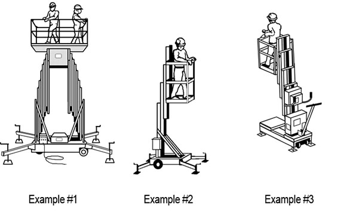

21.K Scaffolds, Work Platforms and Elevating/Aerial Devices
21.K.01–21.K.06
21.K.01 Scaffolds shall be equipped with a standard guardrail per 21.F.01 or other fall protection systems.
21.K.02 For workers erecting and dismantling scaffolds, an evaluation shall be conducted by a CP to determine the feasibility and safety of providing fall protection if fall protection is not feasible. An AHA detailing rationale for infeasibility of use of fall protection shall be submitted and accepted by the GDA.
21.K.03 Suspended scaffolds.
- Single point or two point suspended scaffold: In addition to railings, workers shall also be tied off to an independent vertical lifeline using a full body harness.
- Other suspended scaffolds (e.g. catenary, float, needle-beam, Boatswain chairs): PFAS is required and workers shall be tied off to an independent vertical lifeline using a full body harness.
- A risk assessment shall be performed when persons are supported on a multi-point adjustable suspended scaffold to evaluate the effectiveness and feasibility of the use of PFAS. Results shall be documented in the AHA for the activity being performed. > See 21.I.05.
21.K.04 Self-Propelled Elevating Work Platforms (Scissor Lifts), per ANSI A92.6.
- Scissor lifts shall be equipped with standard guardrails.
- In addition to the guardrail provided, the scissor lift shall be equipped with anchorages meeting the ANSI Z359 Fall Protection Code.
▸Note: Scissor lifts not equipped with anchorages are prohibited.
- A restraint system shall be used in addition to guardrails. The lanyards, to include lanyards with built-in shock absorbers, used with the restraint system shall be sufficiently short to prohibit workers from climbing out of, or being ejected from the platform.
- The use of a self-retracting device (SRD) is prohibited unless permitted by the SRD manufacturer and used in accordance with manufacturer's instructions.
- Workers are prohibited from climbing on or over the guardrails.
21.K.05 Aerial Work Platforms: Boom Supported Platforms (per ANSI A92.5) and Vehicle Mounted Rotating and Elevating Aerial Devices (per ANSI A92.2).
- Workers shall be anchored to the basket or bucket in accordance with manufacturer's specifications and instructions (anchoring to the boom may only be used when allowed by the manufacturer and permitted by the CP).
- Lanyards used shall be sufficiently short to prohibit worker from climbing out of basket.
- Lanyards with built-in shock absorbers are acceptable.
- Self-retracting devices are not acceptable.
- Tying off to an adjacent pole or structure is not permitted unless a safe device for 100% tie-off is used for the transfer.
21.K.06 Manually Propelled Elevating Work Platforms (per ANSI/SIA A92.3). > See Section 22.C.06 for Mobile Scaffolds.
- The platform shall be equipped with standard guardrails.
- If the platform is equipped with anchorages meeting the ANSI Z359, a restraint system shall be used in addition to the guardrails.
- Lanyards used with the restraint system shall be sufficiently short to prohibit workers from climbing out of, or being ejected from the platform.
- Lanyards with built-in shock absorbers are acceptable.
- Self-retracting devices are not acceptable.
- The platform shall not be occupied when moved and at no time will workers be allowed to climb on or over the guardrails. > See Figure 21-5.
FIGURE 21-5
Typical Examples of Manually Propelled Elevating Aerial Platforms

{kind=link}